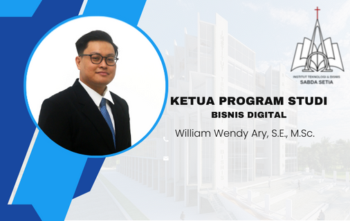
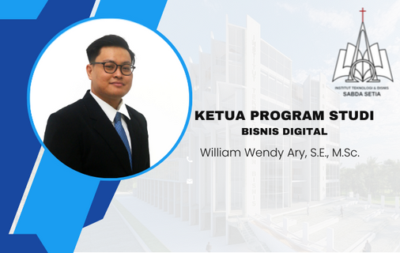

Institut Teknologi dan Bisnis Sabda Setia
ITBSS adalah Institut Teknologi dan Bisnis pertama di Pontianak yang menghadirkan 3 jurusan unggulan yakni Sistem Teknologi dan Informasi, Bisnis Digital, dan Kewirausahaan. Kampus ITBSS terletak di Jl. Purnama 2, Kecamatan Pontianak Selatan, Kota Pontianak, Kalimantan Barat 78121. ITBSS memberikan sebuah pendidikan dan pengalaman yang mendorong kesuksesan mahasiswa dalam karir mereka. ITBSS membantu mereka untuk berhasil di karir mereka — menemukan bidang yang mereka senangi dan berani untuk memimpin di bidangnya. ITBSS mulai berdiri pada tahun 2021 untuk berdampak pada negeri. Dengan puluhan tahun pengalaman yayasan dalam mengelola pendidikan di Kalimantan Barat, kehadiran ITBSS diharapkan dapat memberikan standar baru pendidikan tinggi yang berkualitas.
Pimpinan & Dosen ITBSS


 
